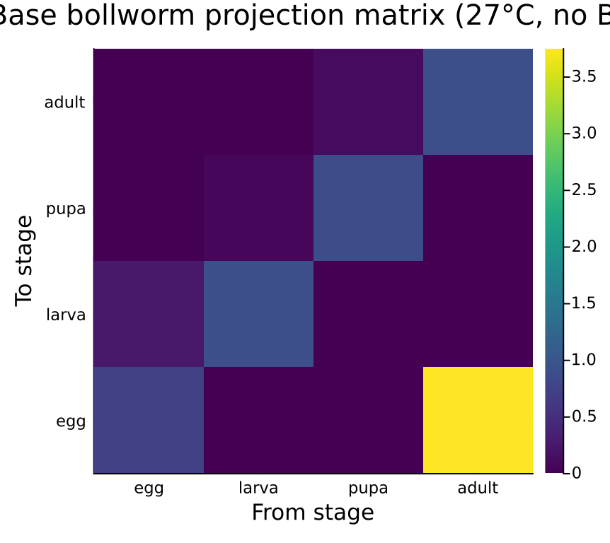
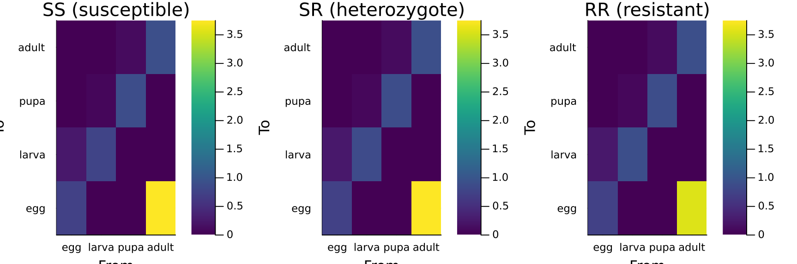
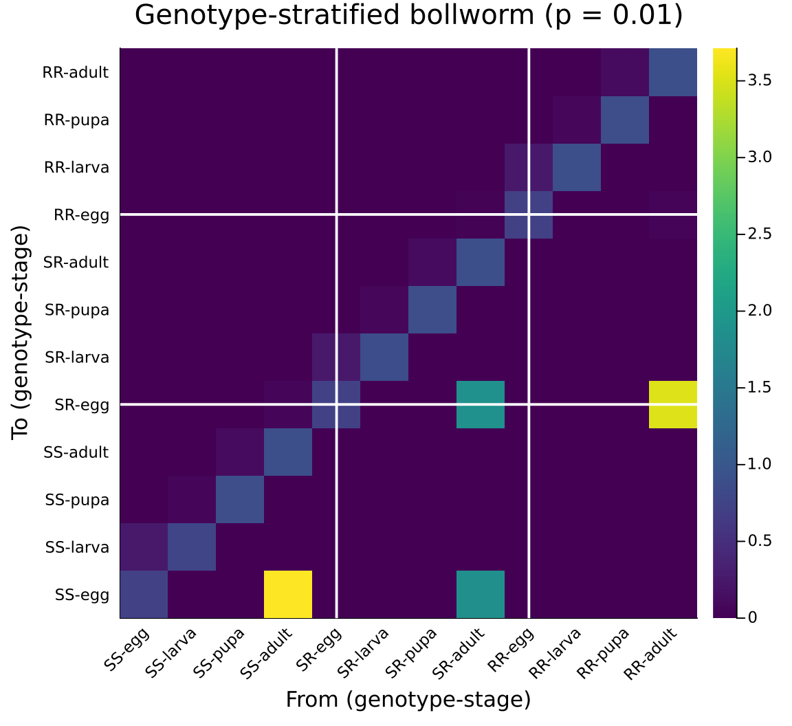
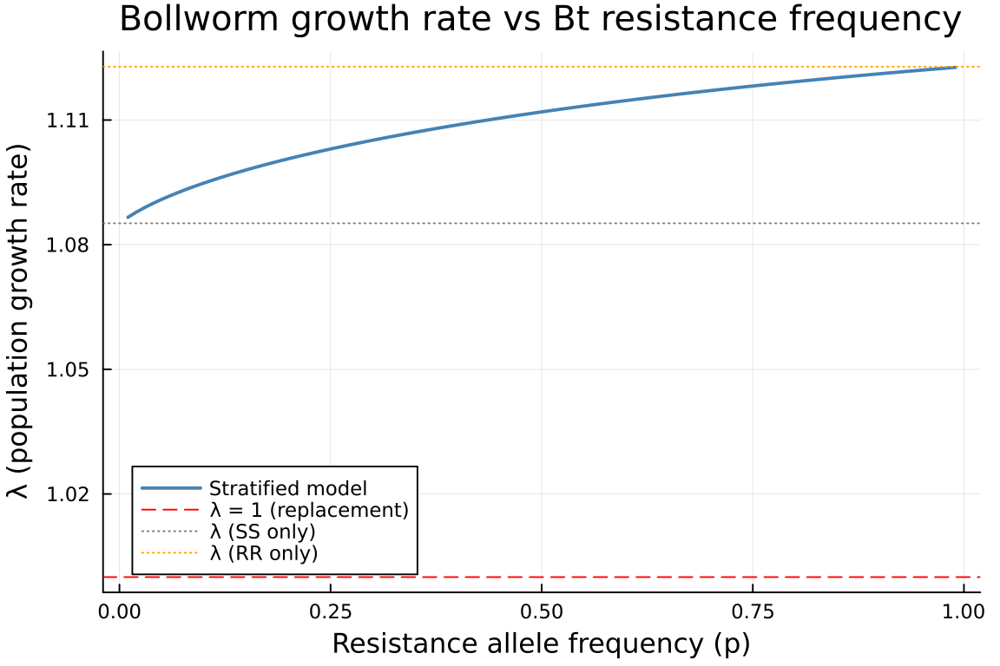
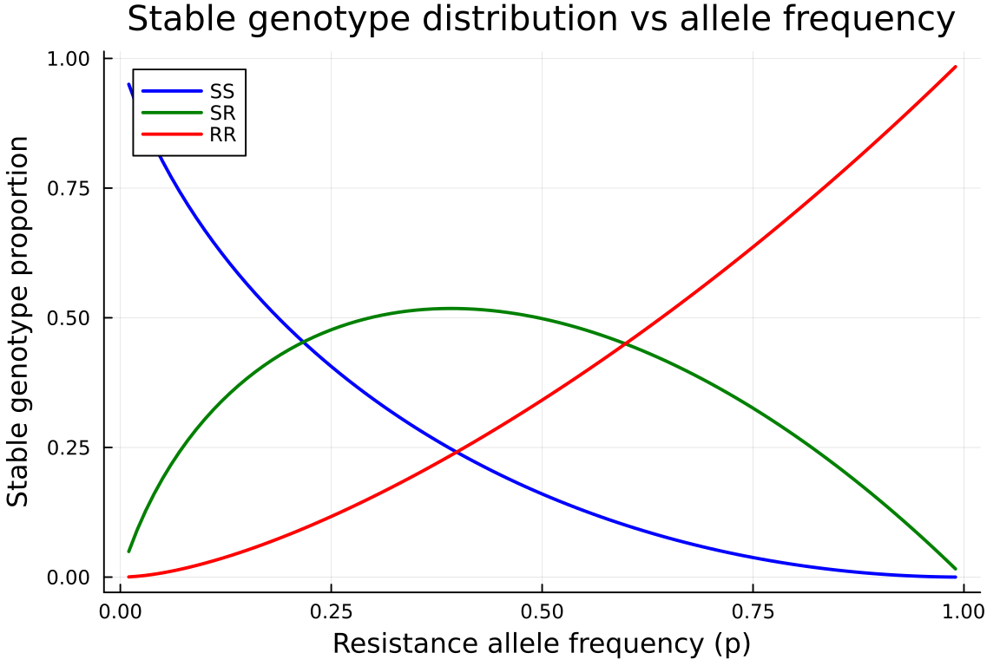
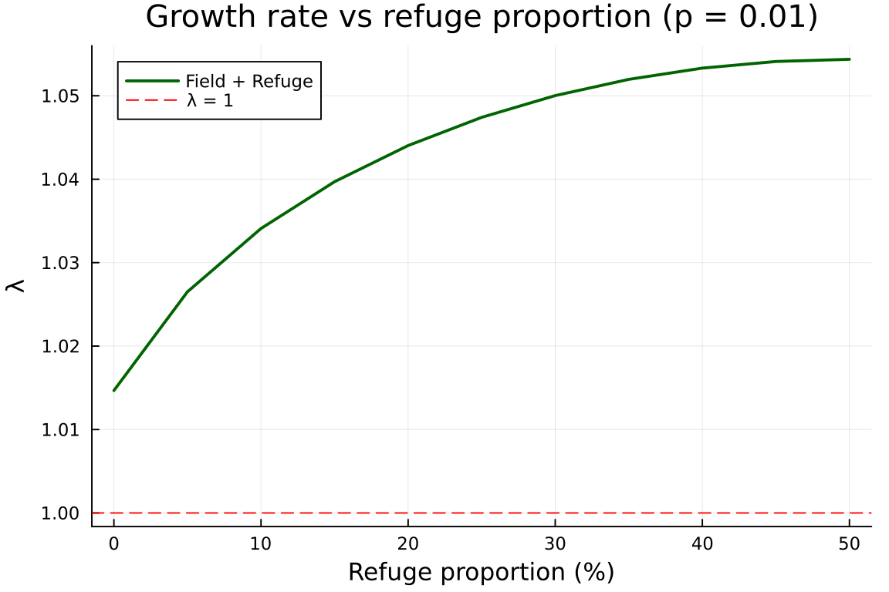
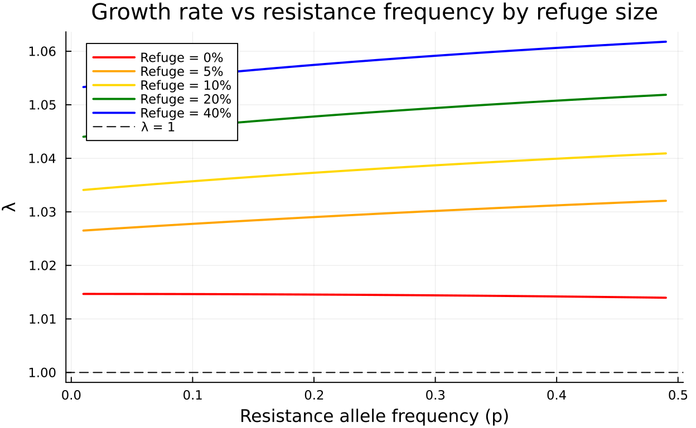

Genotype Stratification: Bt Cotton Resistance Evolution
Author
Simon Frost
Overview
Insect resistance to Bt (Bacillus thuringiensis) toxins in transgenic crops is a classic problem in evolutionary ecology. The cotton bollworm (Helicoverpa armigera) has a 4-stage lifecycle (egg → larva → pupa → adult), and a single diallelic gene controls Bt resistance with 3 genotypes (SS, SR, RR).
This vignette shows how genotype stratification — a discrete categorical stratum over a base lifecycle — enables modular analysis of resistance evolution. We:
- Build the base bollworm lifecycle as a
ValuedProjectionNet - Construct genotype-specific matrices with differential Bt mortality
- Show the compositional (P + F = A) structure via
compose_transitions - Assemble a 12×12 genotype-stratified model with Hardy-Weinberg mating
- Sweep allele frequency to track how resistance affects population growth
- Add spatial structure (Bt field + non-Bt refuge) as nested stratification
The categorical toolkit makes each layer — lifecycle, genotype, space — independently specified and composable.
Setup
using CategoricalPopulationDynamics
using CategoricalPopulationDynamics: ⊕, ⊘
using Catlab
using Catlab.CategoricalAlgebra
using LinearAlgebra
using ProjectionModels: lambda
using PlotsBase Bollworm Lifecycle
We model H. armigera at a reference temperature of 27 °C, near optimal for development. Daily transition probabilities follow a stage-structured framework where individuals either remain in their current stage (stasis) or advance to the next (progression), subject to stage-specific mortality.
# Daily development rates at 27°C (Brière-type approximation)
dev_egg = 0.25 # ~4 day egg stage
dev_larva = 0.07 # ~14 day larval stage
dev_pupa = 0.10 # ~10 day pupal stage
dev_adult = 0.05 # ~20 day adult longevity
# Base daily mortality (no Bt)
μ_egg = 0.05
μ_larva = 0.04
μ_pupa = 0.03
μ_adult = 0.06
# Fecundity: ~150 eggs per female over lifetime, sex ratio 0.5
fecundity = 0.5 * 150 * dev_adult # daily per-capita egg production by adults3.75Each stage has two survival fates — stasis (remain) and advancement (progress to next stage) — both conditional on surviving daily mortality. Using the ⊕ operator (\oplus<TAB>), we compose the lifecycle from two small, independently readable pieces:
bollworm_survival = ValuedProjectionNet(
[:egg, :larva, :pupa, :adult],
:survival => [
(:egg => :egg) => (1 - dev_egg) * (1 - μ_egg),
(:egg => :larva) => dev_egg * (1 - μ_egg),
(:larva => :larva) => (1 - dev_larva) * (1 - μ_larva),
(:larva => :pupa) => dev_larva * (1 - μ_larva),
(:pupa => :pupa) => (1 - dev_pupa) * (1 - μ_pupa),
(:pupa => :adult) => dev_pupa * (1 - μ_pupa),
(:adult => :adult) => (1 - dev_adult) * (1 - μ_adult)])
bollworm_fecundity = ValuedProjectionNet(
[:egg, :larva, :pupa, :adult],
:fecundity => [
(:adult => :egg) => fecundity])
bollworm_base = bollworm_survival ⊕ bollworm_fecundityValuedProjectionNet{Float64}(CategoricalPopulationDynamics.LabelledProjectionNet:
S = 1:1
T = 1:2
Src = 1:2
Tgt = 1:2
Name = 1:0
src_t : Src → T = [1, 2]
src_s : Src → S = [1, 1]
tgt_t : Tgt → T = [1, 2]
tgt_s : Tgt → S = [1, 1]
sname : S → Name = [:stage]
tname : T → Name = [:survival, :fecundity], [:egg, :larva, :pupa, :adult], Dict(:survival => [(:egg => :egg) => 0.7124999999999999, (:egg => :larva) => 0.2375, (:larva => :larva) => 0.8927999999999999, (:larva => :pupa) => 0.06720000000000001, (:pupa => :pupa) => 0.873, (:pupa => :adult) => 0.097, (:adult => :adult) => 0.8929999999999999], :fecundity => [(:adult => :egg) => 3.75]))Materialize the full projection matrix and compute the dominant eigenvalue:
A_base = to_matrix(bollworm_base)
λ_base = lambda(A_base)
println("Base bollworm lifecycle (no Bt):")
println(" Matrix size: ", size(A_base))
println(" λ = ", round(λ_base, digits=4))
println(" Population ", λ_base > 1 ? "GROWING" : "DECLINING")Base bollworm lifecycle (no Bt):
Matrix size: (4, 4)
λ = 1.1274
Population GROWINGstage_labels = String.(stage_names(bollworm_base))
heatmap(stage_labels, stage_labels, A_base,
title="Base bollworm projection matrix (27°C, no Bt)",
xlabel="From stage", ylabel="To stage",
color=:viridis, size=(450, 400))
Genotype-Specific Matrices
On Bt cotton, larvae experience additional genotype-dependent mortality from the Cry toxin. We convert per-period Bt mortality to daily rates:
# Per-larval-period Bt mortality by genotype
bt_period_SS = 0.90
bt_period_SR = 0.50
bt_period_RR = 0.05
larval_period = 1.0 / dev_larva # ~14 days
# Daily Bt mortality: 1 - (1 - period_mort)^(1/period)
μ_bt_SS = 1 - (1 - bt_period_SS)^(1 / larval_period)
μ_bt_SR = 1 - (1 - bt_period_SR)^(1 / larval_period)
μ_bt_RR = 1 - (1 - bt_period_RR)^(1 / larval_period)
println("Daily Bt mortality:")
println(" SS: ", round(μ_bt_SS, digits=4))
println(" SR: ", round(μ_bt_SR, digits=4))
println(" RR: ", round(μ_bt_RR, digits=4))Daily Bt mortality:
SS: 0.1489
SR: 0.0474
RR: 0.0036The RR genotype also pays a fitness cost on non-Bt cotton: 5% reduced fecundity. Instead of rebuilding each lifecycle from scratch, we use the ⊘ operator (\oslash<TAB>) to selectively modify only the affected transitions — Bt mortality hits larval survival, and fitness cost hits fecundity:
function make_bollworm_bt(base; μ_bt_larva, fecundity_multiplier=1.0)
# ⊘ applies a function to a named transition's entries
vnet = base ⊘ (:survival => ((from, _), val) ->
from == :larva ? val * (1 - μ_bt_larva) : val)
if fecundity_multiplier != 1.0
vnet = vnet ⊘ (:fecundity => ((_, __), val) -> val * fecundity_multiplier)
end
return vnet
end
vnet_SS = make_bollworm_bt(bollworm_base, μ_bt_larva=μ_bt_SS)
vnet_SR = make_bollworm_bt(bollworm_base, μ_bt_larva=μ_bt_SR)
vnet_RR = make_bollworm_bt(bollworm_base, μ_bt_larva=μ_bt_RR, fecundity_multiplier=0.95)
A_SS = to_matrix(vnet_SS)
A_SR = to_matrix(vnet_SR)
A_RR = to_matrix(vnet_RR)
println("λ by genotype on Bt cotton:")
println(" SS: ", round(lambda(A_SS), digits=4), " (highly susceptible)")
println(" SR: ", round(lambda(A_SR), digits=4), " (heterozygote)")
println(" RR: ", round(lambda(A_RR), digits=4), " (resistant)")
println(" Base (no Bt): ", round(λ_base, digits=4))λ by genotype on Bt cotton:
SS: 1.0852 (highly susceptible)
SR: 1.1128 (heterozygote)
RR: 1.1228 (resistant)
Base (no Bt): 1.1274p1 = heatmap(stage_labels, stage_labels, A_SS,
title="SS (susceptible)", color=:viridis, clims=(0, maximum(A_base)),
xlabel="From", ylabel="To")
p2 = heatmap(stage_labels, stage_labels, A_SR,
title="SR (heterozygote)", color=:viridis, clims=(0, maximum(A_base)),
xlabel="From", ylabel="To")
p3 = heatmap(stage_labels, stage_labels, A_RR,
title="RR (resistant)", color=:viridis, clims=(0, maximum(A_base)),
xlabel="From", ylabel="To")
plot(p1, p2, p3, layout=(1, 3), size=(900, 300))
Compositional Construction
Each genotype’s matrix is the additive composition of survival and fecundity sub-kernels. We verify this using compose_transitions:
for (label, vnet) in [("SS", vnet_SS), ("SR", vnet_SR), ("RR", vnet_RR)]
U = transition_matrix(vnet, :survival)
F = transition_matrix(vnet, :fecundity)
A_composed = compose_transitions(Dict(:survival => U, :fecundity => F))
A_direct = to_matrix(vnet)
println("$label: compose_transitions(P, F) ≈ to_matrix? ", A_composed ≈ A_direct)
endSS: compose_transitions(P, F) ≈ to_matrix? true
SR: compose_transitions(P, F) ≈ to_matrix? true
RR: compose_transitions(P, F) ≈ to_matrix? trueThis decomposition is essential for management analysis: Bt toxin affects only the survival sub-kernel (larval mortality), while fitness costs affect only the fecundity sub-kernel.
Genotype Stratification
Hardy-Weinberg Mating Matrix
Under random mating with resistance allele frequency <span class="math inline">\p\</span> and <span class="math inline">\q = 1 - p\</span>, offspring genotype frequencies depend on parental genotype through Mendelian segregation. The mating matrix <span class="math inline">\M\</span> has entries <span class="math inline">\M[\text{offspring}, \text{parent}]\</span> giving the probability that an offspring of a given genotype arises from a parent of a given genotype (weighted by allele contributions under random mating at the population level).
For a single diallelic locus:
<span class="math display">\ M = \begin{pmatrix} q & q/2 & 0 \ p & 1/2 & q \ 0 & p/2 & p \end{pmatrix} \</span>
Heterogeneous Stratification
Each genotype has a different local transition matrix (different Bt mortality, fitness costs). CategoricalPopulationDynamics.jl provides a heterogeneous variant of stratify that accepts a vector of stratum-specific matrices:
<span class="math display">\A_{\text{strat}}[(s_{\text{to}}, i),\ (s_{\text{from}}, j)] = D[s_{\text{to}}, s_{\text{from}}] \cdot A_{s_{\text{from}}}[i, j]\</span>
The two demographic processes require different coupling structures:
- Survival — genotype is preserved during the lifecycle → identity coupling (block-diagonal)
- Fecundity — offspring genotype depends on parental genotype via mating → Hardy-Weinberg coupling
We combine these using compose_transitions, giving a clean separation of demography from genetics:
function hw_mating_matrix(p)
q = 1 - p
return [q q/2 0.0; # offspring SS
p 0.5 q; # offspring SR
0.0 p/2 p] # offspring RR
end
function build_genotype_stratified(vnets, p)
Us = [transition_matrix(v, :survival) for v in vnets]
Fs = [transition_matrix(v, :fecundity) for v in vnets]
# Survival: block-diagonal (identity coupling — genotype preserved)
A_surv = stratify(Us, Matrix(1.0I, 3, 3))
# Fecundity: cross-genotype coupling via Hardy-Weinberg mating
A_fec = stratify(Fs, hw_mating_matrix(p))
return compose_transitions(Dict(:survival => A_surv, :fecundity => A_fec))
endbuild_genotype_stratified (generic function with 1 method)Stratified Model at Initial Resistance Frequency
vnets_bt = [vnet_SS, vnet_SR, vnet_RR]
p0 = 0.01 # initial resistance allele frequency
A_strat = build_genotype_stratified(vnets_bt, p0)
println("Genotype-stratified model (p = $p0):")
println(" Matrix size: ", size(A_strat))
println(" λ = ", round(lambda(A_strat), digits=4))Genotype-stratified model (p = 0.01):
Matrix size: (12, 12)
λ = 1.0866# Visualise block structure
geno_labels = ["SS", "SR", "RR"]
full_labels = [string(g, "-", s) for g in geno_labels for s in stage_labels]
heatmap(full_labels, full_labels, A_strat,
title="Genotype-stratified bollworm (p = $p0)",
xlabel="From (genotype-stage)", ylabel="To (genotype-stage)",
color=:viridis, size=(600, 550), xrotation=45)
n = 4
vline!([n + 0.5, 2n + 0.5], color=:white, linewidth=2, label=false)
hline!([n + 0.5, 2n + 0.5], color=:white, linewidth=2, label=false)
The off-diagonal blocks represent cross-genotype transitions through the Hardy-Weinberg mating system — only fecundity connects different genotypes.
Comparison: Stratified vs Isolated Genotypes
println("Growth rates:")
println(" λ (stratified, p=$p0): ", round(lambda(A_strat), digits=4))
println(" λ (SS alone): ", round(lambda(A_SS), digits=4))
println(" λ (SR alone): ", round(lambda(A_SR), digits=4))
println(" λ (RR alone): ", round(lambda(A_RR), digits=4))
println(" λ (no Bt): ", round(λ_base, digits=4))Growth rates:
λ (stratified, p=0.01): 1.0866
λ (SS alone): 1.0852
λ (SR alone): 1.1128
λ (RR alone): 1.1228
λ (no Bt): 1.1274Resistance Evolution Analysis
As resistance allele frequency increases (through selection by Bt), the population growth rate changes. We sweep <span class="math inline">\p\</span> from 0.01 to 0.99:
p_range = 0.01:0.01:0.99
λ_sweep = [lambda(build_genotype_stratified(vnets_bt, p)) for p in p_range]99-element Vector{Float64}:
1.086592648105586
1.0878375914999452
1.0889503600291084
1.0899651463308422
1.090903366947175
1.091779507052286
1.0926039164077168
1.0933843015310616
1.0941265885472464
1.0948354538219116
⋮
1.1213103937295104
1.1214874987881782
1.121662625740985
1.121835795417962
1.1220070279624215
1.1221763428507459
1.122343758911246
1.1225092943419304
1.1226729667274842plot(Base.collect(p_range), λ_sweep,
xlabel="Resistance allele frequency (p)",
ylabel="λ (population growth rate)",
title="Bollworm growth rate vs Bt resistance frequency",
label="Stratified model",
linewidth=2, color=:steelblue,
size=(600, 400))
hline!([1.0], linestyle=:dash, color=:red, label="λ = 1 (replacement)")
hline!([lambda(A_SS)], linestyle=:dot, color=:gray, label="λ (SS only)")
hline!([lambda(A_RR)], linestyle=:dot, color=:orange, label="λ (RR only)")
At low resistance frequency the population is dominated by susceptible individuals and Bt is effective (low λ). As the resistance allele spreads, λ rises toward the RR value — the population recovers and Bt loses efficacy.
Genotype Composition at Stable Structure
The right eigenvector of the stratified matrix gives the stable genotype-stage distribution:
function stable_genotype_freq(A_strat, n_stages)
ev = eigen(A_strat)
idx_max = argmax(real.(ev.values))
w = real.(ev.vectors[:, idx_max])
w = w ./ sum(w)
# Sum across stages within each genotype
n_geno = size(A_strat, 1) ÷ n_stages
geno_freq = [sum(w[((g-1)*n_stages+1):(g*n_stages)]) for g in 1:n_geno]
return geno_freq
end
p_sample = [0.01, 0.05, 0.10, 0.30, 0.50, 0.90]
println("Stable genotype frequencies:")
println(rpad("p", 8), rpad("SS", 10), rpad("SR", 10), "RR")
println("-"^38)
for p in p_sample
A_p = build_genotype_stratified(vnets_bt, p)
gf = stable_genotype_freq(A_p, 4)
println(rpad(p, 8),
rpad(round(gf[1], digits=4), 10),
rpad(round(gf[2], digits=4), 10),
round(gf[3], digits=4))
endStable genotype frequencies:
p SS SR RR
--------------------------------------
0.01 0.9502 0.0494 0.0004
0.05 0.8019 0.1899 0.0082
0.1 0.669 0.3043 0.0267
0.3 0.3431 0.5015 0.1554
0.5 0.1603 0.4984 0.3413
0.9 0.0059 0.148 0.8461geno_SS = Float64[]
geno_SR = Float64[]
geno_RR = Float64[]
for p in p_range
A_p = build_genotype_stratified(vnets_bt, p)
gf = stable_genotype_freq(A_p, 4)
push!(geno_SS, gf[1])
push!(geno_SR, gf[2])
push!(geno_RR, gf[3])
end
plot(Base.collect(p_range), geno_SS, label="SS", linewidth=2, color=:blue)
plot!(Base.collect(p_range), geno_SR, label="SR", linewidth=2, color=:green)
plot!(Base.collect(p_range), geno_RR, label="RR", linewidth=2, color=:red,
xlabel="Resistance allele frequency (p)",
ylabel="Stable genotype proportion",
title="Stable genotype distribution vs allele frequency",
size=(600, 400))
Refuge Strategy
The insect resistance management (IRM) strategy mandates planting a proportion of non-Bt cotton as a refuge to maintain susceptible alleles in the population. This is naturally modeled as nested stratification: genotype stratification within each spatial patch.
Two-Patch Model: Bt Field + Refuge
In the Bt field, larvae experience genotype-specific Bt mortality. In the refuge (non-Bt cotton), there is no Bt mortality, but the RR genotype still pays its fitness cost. Using map_values on the base lifecycle makes this clean:
# Refuge genotype matrices (no Bt mortality, but RR still pays fitness cost)
vnet_SS_ref = make_bollworm_bt(bollworm_base, μ_bt_larva=0.0)
vnet_SR_ref = make_bollworm_bt(bollworm_base, μ_bt_larva=0.0)
vnet_RR_ref = make_bollworm_bt(bollworm_base, μ_bt_larva=0.0, fecundity_multiplier=0.95)
A_SS_ref = to_matrix(vnet_SS_ref)
A_SR_ref = to_matrix(vnet_SR_ref)
A_RR_ref = to_matrix(vnet_RR_ref)
println("λ in refuge:")
println(" SS: ", round(lambda(A_SS_ref), digits=4))
println(" SR: ", round(lambda(A_SR_ref), digits=4))
println(" RR: ", round(lambda(A_RR_ref), digits=4))λ in refuge:
SS: 1.1274
SR: 1.1274
RR: 1.124Building the Nested Stratification
The full model has 24 states: 4 stages × 3 genotypes × 2 patches. Using heterogeneous stratify at both levels, the construction is clean:
- Inner level — genotype stratification within each patch via
stratify([U_SS, U_SR, U_RR], I₃) + stratify([F_SS, F_SR, F_RR], M) - Outer level — spatial stratification across patches via
stratify([A_bt, A_ref], D_spatial)
vnets_ref = [vnet_SS_ref, vnet_SR_ref, vnet_RR_ref]
function build_field_refuge_model(p, refuge_frac, dispersal_rate)
# Genotype-stratified matrices for each patch
A_bt = build_genotype_stratified(vnets_bt, p)
A_ref = build_genotype_stratified(vnets_ref, p)
# Spatial dispersal between Bt field (patch 1) and refuge (patch 2)
bt_frac = 1 - refuge_frac
d = dispersal_rate
D = [(1-d) d*bt_frac;
d*refuge_frac (1-d)]
# Heterogeneous spatial stratification: different matrices per patch
return stratify([A_bt, A_ref], D)
endbuild_field_refuge_model (generic function with 1 method)Effect of Refuge Proportion
p_test = 0.01
d_rate = 0.1 # 10% daily dispersal rate
refuge_fracs = 0.0:0.05:0.50
λ_refuge = [lambda(build_field_refuge_model(p_test, r, d_rate)) for r in refuge_fracs]
plot(Base.collect(refuge_fracs) .* 100, λ_refuge,
xlabel="Refuge proportion (%)",
ylabel="λ",
title="Growth rate vs refuge proportion (p = $p_test)",
linewidth=2, color=:darkgreen, label="Field + Refuge",
size=(600, 400))
hline!([1.0], linestyle=:dash, color=:red, label="λ = 1")
Refuge Effect Across Resistance Frequencies
The crucial question: does a refuge keep λ below replacement across a range of allele frequencies?
p_range_coarse = 0.01:0.02:0.50
refuge_levels = [0.0, 0.05, 0.10, 0.20, 0.40]
plot(title="Growth rate vs resistance frequency by refuge size",
xlabel="Resistance allele frequency (p)",
ylabel="λ", size=(650, 400), legend=:topleft)
colors = [:red, :orange, :gold, :green, :blue]
for (i, r) in enumerate(refuge_levels)
λ_vals = [lambda(build_field_refuge_model(p, r, d_rate)) for p in p_range_coarse]
plot!(Base.collect(p_range_coarse), λ_vals,
label="Refuge = $(Int(r*100))%",
linewidth=2, color=colors[i])
end
hline!([1.0], linestyle=:dash, color=:black, label="λ = 1", linewidth=1)
With no refuge, even moderate resistance allele frequencies allow the population to recover. A 20% refuge substantially delays the point at which λ exceeds 1, extending the useful life of Bt technology.
Dominant Genotype by Patch
function patch_genotype_freqs(A_full, n_stages, n_geno)
ev = eigen(A_full)
idx_max = argmax(real.(ev.values))
w = real.(ev.vectors[:, idx_max])
w = w ./ sum(w)
n_per_patch = n_stages * n_geno
n_patches = size(A_full, 1) ÷ n_per_patch
result = zeros(n_patches, n_geno)
for patch in 1:n_patches
for g in 1:n_geno
start_idx = (patch-1)*n_per_patch + (g-1)*n_stages + 1
end_idx = start_idx + n_stages - 1
result[patch, g] = sum(w[start_idx:end_idx])
end
result[patch, :] ./= sum(result[patch, :])
end
return result
end
println("Stable genotype distribution by patch (p=$p_test, 20% refuge):")
A_fr = build_field_refuge_model(p_test, 0.20, d_rate)
freqs = patch_genotype_freqs(A_fr, 4, 3)
println(rpad("", 12), rpad("SS", 10), rpad("SR", 10), "RR")
for (i, patch) in enumerate(["Bt field", "Refuge"])
println(rpad(patch, 12),
rpad(round(freqs[i, 1], digits=4), 10),
rpad(round(freqs[i, 2], digits=4), 10),
round(freqs[i, 3], digits=4))
endStable genotype distribution by patch (p=0.01, 20% refuge):
SS SR RR
Bt field 0.9715 0.0283 0.0002
Refuge 0.9762 0.0236 0.0001Summary
This vignette demonstrated how categorical composition and stratification enable modular analysis of Bt resistance evolution:
⊕(merge) — the base bollworm lifecycle is composed from separate survival and fecundityValuedProjectionNetobjects viasurvival ⊕ fecundity, keeping each sub-kernel readable and independently verifiable⊘(map_values) — genotype-specific Bt mortality and fitness costs are applied as targeted modifications viabase ⊘ (:survival => f), avoiding redundant specification of unchanged transitionscompose_transitions— verifies the additive decomposition A = P + F, clarifying that Bt affects only the survival sub-kernel- Heterogeneous stratification —
stratify([U_SS, U_SR, U_RR], I₃)for genotype-preserving survival +stratify([F_SS, F_SR, F_RR], M)for Hardy-Weinberg mating coupling, combined viacompose_transitions - Nested stratification — spatial dispersal between Bt field and refuge via
stratify([A_bt, A_ref], D)yields a 24×24 model from composable building blocks - Management insight — sweeping allele frequency and refuge proportion reveals that a 20% non-Bt refuge substantially delays resistance evolution by maintaining susceptible genotypes in the population
The categorical framework makes each modelling layer — lifecycle topology, genotype-specific rates, mating system, and spatial structure — independently specified and composable. Adding a new genotype, a fitness cost, or a third patch requires modifying only the relevant layer without rewriting the full model.